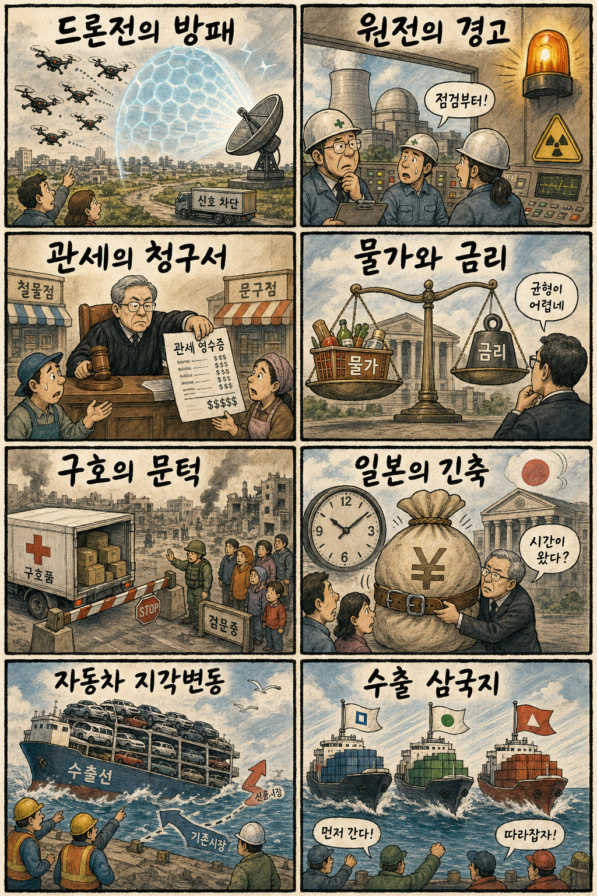
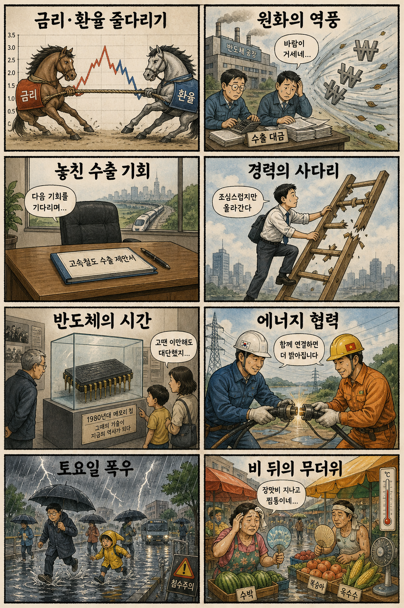

01
크라우드스트라이크 · 228.49→218.40달러 · -4.42%
내용요약 시가 대비 4.42% 하락하며 전일 급등분 일부를 되돌렸습니다.
예상여파 국내 보안 소프트웨어주의 단기 심리에 부담이며 변동성 확대를 경계합니다.
MORNING_BRIEFING_20260829
작성 시각: 2026-08-29 06:37 KST · 직전 미국 정규장과 2026-08-29 KST 당일 공개 기사 기준
직전 미국 정규장인 8월 28일에는 다우 -0.02%, S&P 500 -0.25%, 나스닥 -0.52%로 동반 약세였습니다. 엔비디아는 시가 대비 -4.30%, 크라우드스트라이크 -4.42%, 마벨 -3.86%로 AI 하드웨어·보안주가 밀린 반면 아마존 +3.14%, 알파벳 +1.71%, 마이크로소프트 +1.62%는 방어했습니다. 국내 증시는 토요일 휴장이며 월요일에는 전일 급락한 대형 반도체와 원화 흐름을 함께 확인해야 합니다.
| 지수 | 종가 | 등락률 | 한국 증시 시사점 |
|---|---|---|---|
| 다우존스 | 53,559.99 | -0.02% | 경기주 중립 |
| S&P 500 | 7,711.76 | -0.25% | 기술주 차익실현 경계 |
| 나스닥 종합 | 26,402.42 | -0.52% | 기술주 차익실현 경계 |
엔비디아와 AI 하드웨어가 밀리며 기술주가 숨을 골랐습니다.
오늘은 거래가 없으며 월요일 시초가 추격을 피합니다.
연준의 물가 우선 발언과 일본은행 긴축 가능성을 봅니다.
휴장일이며 검증 문턱을 통과한 후보가 없습니다.
8월 28일 보고서는 검증 문턱을 통과한 후보가 없어 공식 추천을 내지 않았습니다. 게시 당시 판단은 그대로 유지되며 사후 종목을 추가하지 않습니다.
| 시장 | 종가 | 등락률 | 해석 |
|---|---|---|---|
| KOSPI | 6,788.88 | -1.79% | 28일 시가 대비 -0.84% |
| KOSDAQ | 838.41 | +0.09% | 28일 시가 대비 +0.38% |
| 다우존스 | 53,559.99 | -0.02% | 보합 |
| S&P 500 | 7,711.76 | -0.25% | 기술주 약세 |
| 나스닥 종합 | 26,402.42 | -0.52% | 기술주 약세 |
아마존이 시가 대비 +3.14%로 강했습니다.
알파벳 +1.71%, 마이크로소프트 +1.62%였습니다.
엔비디아 -4.30%, 마벨 -3.86%, 어플라이드머티리얼즈 -3.41%였습니다.
크라우드스트라이크가 시가 대비 -4.42%로 밀렸습니다.
내용요약 시가 대비 4.42% 하락하며 전일 급등분 일부를 되돌렸습니다.
예상여파 국내 보안 소프트웨어주의 단기 심리에 부담이며 변동성 확대를 경계합니다.
내용요약 AI 반도체 차익실현 속 시가 대비 4.30% 하락했습니다.
예상여파 국내 HBM 대형주의 월요일 시초가에 부담이 될 수 있어 갭 하락 뒤 수급 확인이 우선입니다.
내용요약 AI 네트워크 반도체가 시가 대비 3.86% 하락했습니다.
예상여파 AI 인프라 내에서도 네트워크·맞춤형 칩 종목의 고평가 부담이 부각될 수 있습니다.
내용요약 대형 기술주 약세 속에서도 시가 대비 3.14% 상승했습니다.
예상여파 클라우드와 소비 플랫폼의 상대강도는 기술주 내부 순환매 가능성을 보여줍니다.
내용요약 AI 소프트웨어·클라우드 선호로 시가 대비 1.62% 상승했습니다.
예상여파 하드웨어 약세와 소프트웨어 강세의 차별화가 국내 관련주에도 이어질 수 있습니다.
오늘은 토요일로 국내 증시가 휴장입니다. 월요일에는 나스닥 -0.52%와 엔비디아 -4.30%가 전일 KOSPI에서 약했던 대형 반도체에 추가 부담을 줄 수 있습니다. 반면 아마존·알파벳·마이크로소프트의 상대강도는 AI 소프트웨어·플랫폼의 선택적 방어 가능성을 보여줍니다. 8월 28일 KOSPI는 시가 대비 -0.84%였고 KOSDAQ은 +0.38%로 차별화돼, 월요일에도 지수보다 원화와 외국인 수급을 먼저 확인합니다.
오늘은 추천 없음 — 현금 관망
토요일 국내 증시 휴장이고, 전일까지의 외국인·기관 수급, 컨센서스 변화, 30건 이상 유사 조건 확률 보정, 예상 손익비 1.5 이상을 동시에 검증한 종목이 없습니다. 종합점수와 상승확률을 임의로 만들지 않습니다.
관심 연결종목 AI 소프트웨어, 원전·전력, 환율 민감 수출주는 뉴스 연결 관찰 대상일 뿐 매수 추천이 아닙니다. 월요일 개장 초 급등락 종목은 추격매수 금지입니다.
연준의 물가 우선 발언과 금리 기대 변화를 봅니다.
일본은행 긴축 전망이 아시아 환율에 미치는 영향을 봅니다.
엔비디아 조정이 월요일 국내 HBM 수급으로 이어지는지 점검합니다.
교통·시설 피해와 남부 무더위 대응을 함께 챙깁니다.
핵심 요약: AI 산업은 오픈소스 플랫폼 인수, 대형 하드웨어 펀드, 초고속 스타트업 가치평가, 중국 AI 기업 상장 경쟁으로 자본의 범위를 넓히고 있습니다. 동시에 기업 현장에서는 도입 목적과 측정 가능한 성과가 더 중요해지고 있습니다.
내용요약 기업의 AI 도입이 기술 과시보다 해결할 업무 문제와 성과지표에서 출발해야 한다는 당일 칼럼입니다.
예상여파 AI 투자 심사가 모델 성능보다 비용 절감·매출·업무시간 같은 측정 가능한 성과 중심으로 바뀔 수 있습니다.
내용요약 엔비디아의 허깅페이스 인수 보도가 오픈소스 모델 유통과 개발자 생태계 재편 가능성을 짚었습니다.
예상여파 칩에서 모델 플랫폼까지 영향력이 넓어지면 개발 편의는 높아질 수 있지만 생태계 집중과 규제 논쟁도 커질 수 있습니다.
내용요약 실리콘밸리 투자자가 약 1.5조원 규모의 AI 하드웨어 펀드 조성에 나섰다는 보도입니다.
예상여파 AI 자금이 소프트웨어뿐 아니라 로봇·칩·센서·제조 장비로 확산되며 실제 양산 역량의 중요성이 높아질 수 있습니다.
내용요약 23세 창업자의 AI 스타트업이 설립 4개월 만에 기업가치 3조원을 넘겼다는 당일 보도입니다.
예상여파 초기 AI 기업의 가치평가 속도가 빨라지는 만큼 고객 유지율과 반복 매출이 거품 여부를 가를 핵심 지표가 됩니다.
내용요약 중국 딥시크가 외부 투자와 2027년 상하이 상장을 추진하며 740억달러 가치가 거론됐다는 보도입니다.
예상여파 미·중 AI 자본 경쟁이 심화하고 중국 모델 생태계의 자금 조달이 늘 수 있으나 규제와 수익성 검증 부담도 확대됩니다.
핵심 요약: 우크라이나 전장의 전자전과 자포리자 원전 안전 위험이 커지는 가운데, 미국 관세 환급과 연준 물가 경계가 시장의 정책 변수를 만들고 있습니다. 일본은행의 긴축 전망도 아시아 자금 흐름에 영향을 줄 수 있습니다.
내용요약 러시아가 우크라이나의 위성통신 기반 드론 운용을 방해하는 체계를 대량 생산한다는 당일 보도입니다.
예상여파 전자전 경쟁이 심해지면 통신 복원력과 대체 위성망 확보가 전장 운용과 방산 수요의 핵심 변수가 될 수 있습니다.
내용요약 IAEA가 자포리자 원전에서 세 차례 드론 피격으로 직원 2명이 다쳤다고 밝혔다는 보도입니다.
예상여파 원전 주변 공격은 방사능 안전 우려와 전력 공급 불안을 키워 국제사회의 시설 보호 압박을 높일 수 있습니다.
내용요약 미국 대법원의 관세 무효 판결 이후 소매·제조 기업들에 환급 효과가 반영된다는 분석입니다.
예상여파 관세 환급은 일부 기업의 비용 부담을 낮추지만 향후 무역정책 재설계에 따라 공급망 불확실성은 이어질 수 있습니다.
내용요약 연준 인사가 물가를 우선 과제로 강조하면서 시장의 9월 금리인상 확률이 높아졌다는 보도입니다.
예상여파 긴축 경계가 강화되면 장기금리와 달러가 오르고 성장주·신흥시장 자금 흐름의 변동성이 커질 수 있습니다.
내용요약 일본은행의 9월 추가 긴축 가능성과 엔화 매수 공조 개입 전망을 다룬 분석입니다.
예상여파 엔화 강세가 현실화하면 일본 수출기업과 아시아 환율 경쟁, 엔캐리 자금 회수 위험을 함께 자극할 수 있습니다.

핵심 요약: 국내에서는 금리·환율이 증시와 수출기업 실적의 핵심 변수로 떠올랐습니다. UAE 고속철 수주 실패와 청년 경력 사다리 문제는 산업·고용 정책의 실행력을 묻고, 오늘은 전국 강한 비와 남부 무더위에 대비해야 합니다.
내용요약 금리와 환율의 방향이 국내 증시 변동성과 주도주를 가를 수 있다는 주말 시장 분석입니다.
예상여파 월요일 개장에서는 원화와 외국인 수급을 확인하기 전 지수 반등을 추격하지 않는 접근이 필요합니다.
내용요약 한국 기업이 19조원 규모 UAE 고속철 사업의 입찰 서류를 내지 못해 기회를 놓쳤다는 보도입니다.
예상여파 대형 인프라 수출은 기술력뿐 아니라 금융·보증·입찰 행정의 통합 지원이 수주 경쟁력을 좌우할 수 있습니다.
내용요약 최근 두 달간 원화 환율이 12% 하락하면서 반도체 기업의 원화 환산 매출 부담이 거론됐습니다.
예상여파 원화 강세는 수입비용을 낮추지만 달러 매출 비중이 큰 수출기업의 환산 실적과 가격 경쟁력에는 부담이 될 수 있습니다.
내용요약 청년 고용정책이 단기 지원보다 경력을 쌓을 수 있는 사다리를 만들어야 한다는 당일 칼럼입니다.
예상여파 인턴·훈련의 정규 경력 인정과 기업의 채용 연계가 강화돼야 청년 고용의 지속성이 높아질 수 있습니다.
내용요약 전국 대부분 지역에 비가 내리고 남부를 중심으로 무더위가 이어진다는 당일 예보입니다.
예상여파 강한 비와 천둥·번개에 따른 교통·시설 피해를 경계하고 남부에서는 온열질환 대비도 병행해야 합니다.
